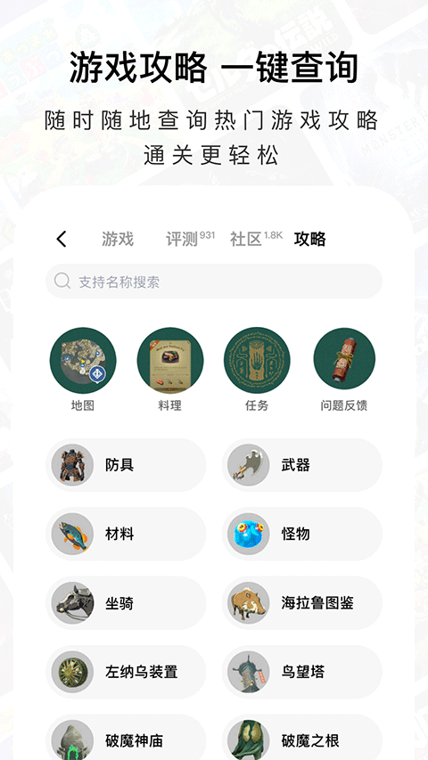

用Jump踩过的四个坑：同名应用装错只是开始
Jump 这款游戏社区应用看起来功能全但细节上有不少容易翻的车，从装错包到点卡买错区服再到发帖违规，本文整理了最常见的几个坑和具体解法，帮新用户快速上手。
Jump 是我用了快一年的游戏社区应用了——查低价、看评测、充点卡一条龙，Jump官网上能看到完整的功能介绍，体验下来确实方便。但回想刚上手那阵子，踩过的坑还真不少，有几个甚至差点让我放弃。写这篇就是把那些"当时懵了半天"的点整理出来，给新用户打个预防针。
坑一：同名应用装错，打开全是广告
我第一次在安卓商店搜 Jump，出来好几个同名的。随手点了一个，装上以后打开就是满屏的广告弹窗，查个游戏详情还要看 15 秒视频，当时以为这应用怎么变得这么流氓。后来才发现装错了——真正的 Jump 开发者是北京矽岛科技有限公司，商店里那些蹭热度的同名应用根本不是一回事。
症状：打开就是广告、功能残缺、权限请求特别多，或者界面里根本找不到"数字点卡"这个入口。
原因：Jump 本身热度高，蹭名字的应用就冒出来了，商店搜索结果里你不一定能一眼认出哪个是真的。
解法：装的时候先看开发者名称，认准"北京矽岛科技有限公司"这几个字；再瞟一眼体积，正常的 Jump 安装包在七十多 MB 量级，太小或太大的都可疑，稳妥的做法是从官方下载渠道获取；如果装完发现不对劲，直接卸掉重装，别想着凑合用——盗版包不仅功能不全，还可能偷跑后台。
坑二：点卡买错区服，充不进去还不给退
这个坑我踩过两次。第一次买了土耳其区的 Steam 点卡，拿到手兴冲冲去充值，输入序列号以后 Steam 提示"该代码与您的账户区域不匹配"。我当时愣了——钱花了，卡密在手里，充不进自己账号。第二次是帮朋友买 PS 点卡，买成了美区的，朋友是港服账号，结果一样报错。
症状：卡密输入后平台返回区域不匹配错误，或者直接显示无效代码。
原因：点卡是分区域发行的，不同区的点卡只能充对应区的账号。买的时候没注意区分"土耳其区""阿根廷区""国区"这些标签，以为都是 Steam 点卡就通用。
解法：买之前先确认自己平台账号属于哪个区——Steam 在账户明细里能看到，PS 在商店设置里看。Jump 的点卡页面有明确的区服分类，买的时候别光看面额便宜就点，区服那一栏一定得对上。卡密拿到手尽快兑换，别存太久——要是平台调了区服规则，旧卡可能也会失效。
坑三：发帖被秒删，还不知道为什么
刚注册那会儿我在某款游戏的社区发了个"求代练，价格好商量"的帖子，发完刷新就没了，再发一条同样的内容，账号直接被限制发帖一周。那时候完全不知道社区有规矩，以为跟贴吧一样随便发。
症状：帖子发布后瞬间消失，或者收到系统通知说违规，严重的账号功能被限制。
原因：Jump 社区对广告、代练、站外交易类内容管得很严，机器审核直接拦截。新人刚进来不了解规则，很容易无意中踩线。
解法：发帖前先搜一下社区里有没有类似问题——Jump 的社区搜索做得不错，大部分卡关或求助类问题都能搜到现成答案；真要发帖，把背景写清楚（比如卡在哪、试过什么），别只扔一句"这游戏怎么过"。另外，代练、账号交易、站外推广这些内容碰都别碰，机器一秒就能识别，社区完整规则在Jump文档里有整理，发帖前可以先翻翻。

坑四：评测写了没人看，沉底到找不到
有段时间我写完游戏评测兴冲冲发布，结果几天过去一个赞都没有，列表页往下翻好几十页才能找到自己的文章。一开始以为是游戏太冷，后来看了看其他人的热门评测，才明白问题出在哪——我写的全是"神作""垃圾"这种空泛评价，没有具体细节，读者看完等于没看。
症状：评测发布后评分没人参考，文章互动量为零，列表页沉底。
原因：只写结论不写细节、没有标注游玩时长、不说明适合谁不适合谁——读者看完不知道这评测对自己有没有参考价值，自然不会去点赞或留言。
解法：写评测时先放一句话结论（适合谁、不适合谁），然后标注游玩时长（40 小时和 4 小时的结论分量完全不同），挑两三个让你印象深刻的设计或槽点讲讲。最后那句购买建议也很重要——首发入、等打折还是不推荐，这往往是读者最在意的。
防坑清单
- 装应用先核对开发者名称和安装包体积，别被同名盗版坑
- 点卡购买前确认自己账号区服，区服不匹配的点卡充不进去
- 发帖前先搜社区，广告、代练、站外交易等红线绝对别碰
- 评测要写具体细节和游玩时长，空泛的结论没人看
- 版本号更新快，直接用商店最新版，别找来路不明的旧包
其实这些坑本质上都是"没花半分钟核对细节"导致的——花十秒认一下开发者名字、花五秒查一下账号区服、发帖前搜一下有没有同款问题，就能躲开大部分翻车。Jump 这款应用本身功能扎实，社区氛围也不错，把这些小动作养成习惯之后，用起来其实相当省心。这套整理好的资料我放在了三个仓库方便随时查阅：GitHub 上有完整源码可以看个究竟，Gitee 给国内网络做了镜像访问更快，GitCode 那边也存了一份以防万一。